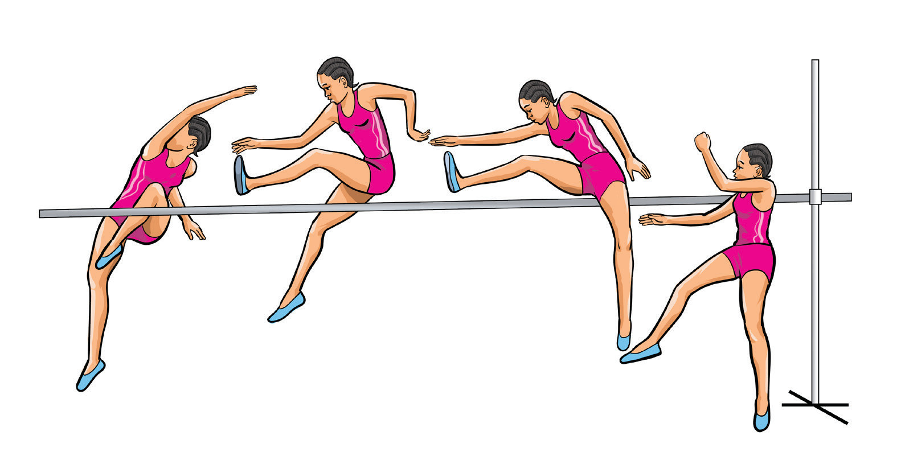

d
c
b
a
Fosbury flop
This is a bar clearance technique where the athlete runs from a straight line first and then twists the body on take-off and goes up head first with the back on the bar. The following steps will help you practice Fosbury flop bar clearance:
(i)
From J-shaped run-up, run tall while keeping your hips high;
(ii)
Plant the take-off foot (foot opposite to the side of the curve during the approach run);
(iii)
Drive your knees high on take-off while keeping your head up;
(iv)
Swing your arms high to propel your body up;
(v)
Jump up high rather than into the bar;
(vi)
When crossing the bar, arch your back and pull your hips towards the sky;
(vii)
Tuck your heels under the bar to lift your hips up; and
(viii)
Land on the mat with your upper back or shoulders, Figure 2.41.